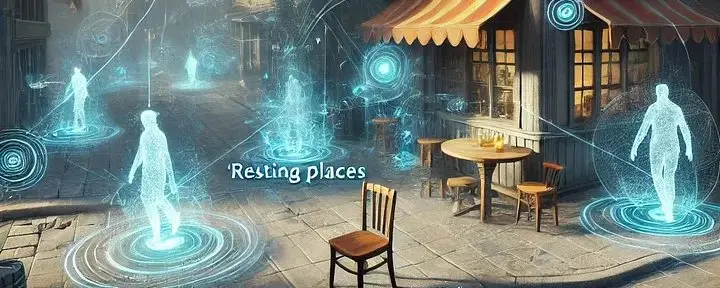

Meaning and Memory in Massive Simulations
· Simulated Worlds series
In massive persistent game worlds and simulations, we’ve long approached design from an object-first perspective: create objects, attach behaviors, and let entities interact with them. But what if we’ve been thinking about it backwards? What if, instead of starting with objects and inferring their meaning, we start with meaning and let it manifest as objects?
Meaning-First Design
Consider how we typically create game worlds. We place a chair, give it a “can sit” behavior, and tell NPCs to look for chairs when they want to sit. But this isn’t how natural intelligence works. When we enter a room, we don’t catalog objects and then deduce their uses — we immediately perceive possibilities for action. We see “sitting-places,” “climbing-opportunities,” “hiding-spots.”
This insight could revolutionize how we design persistent worlds. Instead of creating objects with behaviors, we could create meanings that manifest as objects. An NPC wouldn’t search for a chair; it would seek a “resting-place” and discover that chairs, benches, logs, and stairs all satisfy this meaning.
Environmental Memory Fields
Now lets consider decentralizing memory in our simulations. Currently, we store memories and knowledge in NPCs — each character carries their own separate understanding of the world. But what if the environment itself could remember?
Imagine a tavern table that accumulates memories of conversations had around it. A sword that carries the echo of battles it has witnessed. A city street that remembers patterns of traffic flow. Instead of NPCs carrying all the memory burden, they could tap into these environmental memory fields as they interact with objects and places.
A Living, Learning World
This approach creates fascinating possibilities:
Organic Persistence
- Objects become “smarter” over time as they accumulate interaction patterns
- Places develop character based on events that occurred there
- The environment itself becomes a form of distributed intelligence
Meaningful Player Impact
- Player actions leave lasting impressions on objects and locations
- Future NPCs can “remember” significant player events by interacting with affected locations
- Creates organic world persistence without explicit state tracking
Emergent Behavior
- NPCs can discover novel uses for objects by observing others
- Memory fields can influence each other, creating emergent patterns
- The world feels more alive and unpredictable
Implementation Challenges
Building such a system would require careful consideration of:
- Memory field storage and retrieval efficiency
- Memory decay over time
- Field strengthening through repeated events
- Memory transfer between connected objects
- Balancing emergence with predictability
Real-World Applications
While this approach is particularly relevant for games, its implications extend beyond entertainment. Similar principles could apply to:
- Urban planning simulations
- Social behavior modeling
- Environmental impact studies
- Traffic flow optimization
- Crowd behavior prediction
The Future of Simulation
By shifting our focus from objects to meanings and implementing environmental memory fields, we could create incredibly rich, dynamic worlds that feel truly alive. These worlds would:
- Respond organically to user actions
- Develop their own character over time
- Foster emergent gameplay and behavior
- Create more meaningful persistence
- Feel more natural and alive
The future of massive simulations lies not in more detailed objects or complex behaviors, but in understanding the primacy of meaning and the distributed nature of memory. By building systems that reflect these principles, we can create worlds that don’t just simulate life — they develop it.
This paradigm shift requires us to think differently about how we architect our virtual worlds. The computational complexity is significant, but the potential rewards — in terms of richness, emergence, and natural feeling worlds — make it a compelling direction for future development.
The question isn’t whether we can afford to build such systems — it’s whether we can afford not to, as users increasingly demand more organic, responsive, and meaningful virtual worlds.
First published on X on February 7, 2025. Read the original.